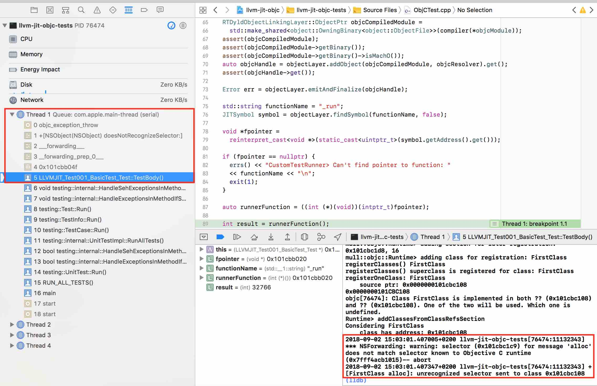
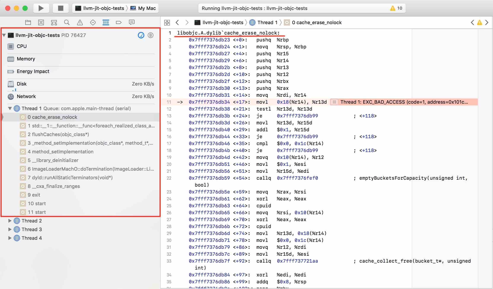
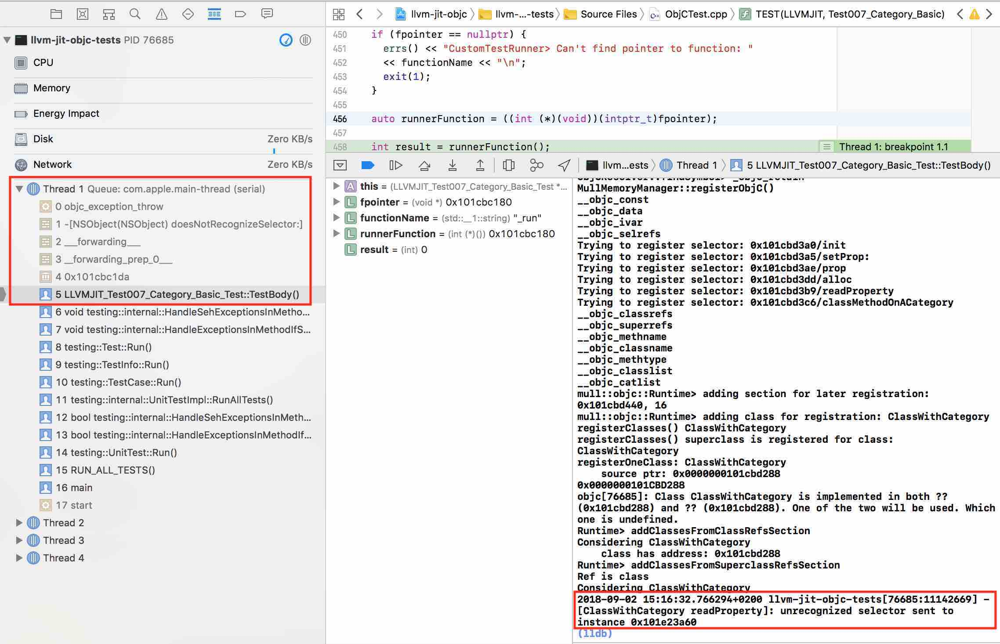
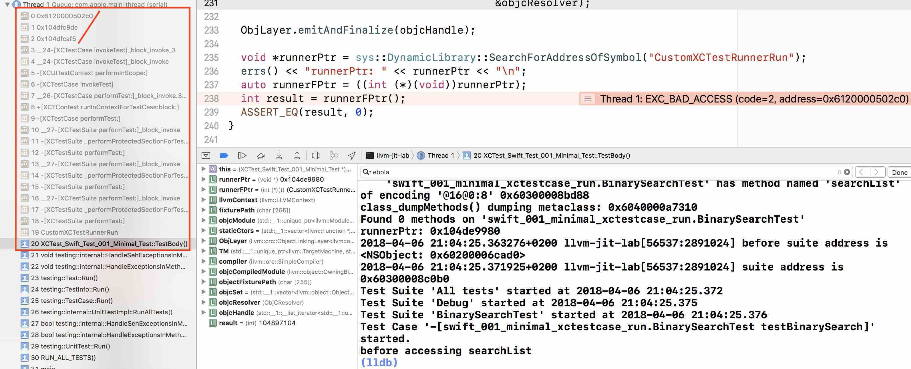

LLVM JIT, Objective-C and Swift on macOS: knowledge dump
This post is the counterpart of another post: Mutation testing for Swift with Mull: how it could work. Looking for contributors.
TL;DR
It is possible to run Objective-C and Swift code with LLVM JIT on macOS system. One way to make it work is to subclass a SectionMemoryManager used by LLVM JIT engine, intercept memory sections related to Objective-C as they get allocated in memory, find the Objective-C metadata in these sections, parse the Objective-C class information from this metadata, use a number of Objective-C Runtime API methods to register found Objective-C classes in Objective-C runtime.
Although this approach only targets Objective-C code and the Objective-C Runtime, it also seems to enable support for combined Swift and Objective-C code: given that the Objective-C classes are registered, Swift code with enabled Objective-C interoperability seems to run without any major issues in LLVM JIT.
This information is actual as of Summer 2018 and is based on the details of LLVM JIT 3.9 - 6.0 and Objective-C Runtime as it is found in the objc4-723.
Why does anyone want to run Swift with LLVM JIT?
We want LLVM JIT to run Swift and Objective-C code, because we want Mull, the mutation testing tool, to support these programming languages. Mull accepts an input program which is precompiled to LLVM bitcode, finds and performs mutations in this program and then runs the program and its numerous modified (or "mutated") clones using LLVM JIT. Running the program and its mutations in memory with LLVM JIT saves time because Mull does not have to recompile and relink all of the programs from scratch: Mull finds and performs mutations on LLVM IR level and never goes back to the AST level. This approach gives a great advantage in performance but also imposes a constraint: Mull supports a programming language only if it can be run with LLVM JIT. In this case, it is important that LLVM JIT runs Swift and Objective-C.
What is a registered Objective-C code?
The Objective-C code not known to Objective-C runtime is a code that is not activated. You can almost run it but there will always be something in Objective-C Runtime that does not like this kind of code.
The following are the most popular errors that you can get about unregistered Objective-C code:
1) If the Objective-C selectors are not registered you get an exception about them:
Unregistered selector: selector for message does not match selector known to Objective C runtime
2) If you don't register Objective-C classes, the code can even execute but then, when the program exits, you will get the crash in libobjc/cache_erase_nolock:
Unregistered class: something is wrong with Objective-C runtime internal cache
3) If the class's category methods are not registered there is an exception about unrecognized selector:
Unregistered category method: unrecognized selector sent to instance
4) Unregistered class also means it might execute without errors but it will not be possible to obtain it with things like NSStringFromClass:
// nil because UnregisteredClass is not known to Objective-C Runtime
NSClassFromString(@"UnregisteredClass") => nil
Mach-O binary with Objective-C code
When Objective-C code is compiled to an object file, compiler also emits special Objective-C-related sections to this object file. When an executable (or a library) with this Objective-C code is loaded to the memory, a dyld loader reads the loaded code and triggers callbacks that register the Objective-C classes in the Objective-C runtime of a running process.
Objective-C-related sections have names that start from __objc_. For example, __objc_selrefs contains information about selectors, __objc_classlist contains references to the Objective-C class declarations, __objc_catlist contains references to the Objective-C class categories and a few others.
With LLVM JIT there is no dyld to trigger the code that does Objective-C registration. The dynamic loader implementation, that LLVM JIT uses: llvm::RuntimeDyld class (and its related classes for Mach-O), is not aware of Objective-C, so a special code that does the Objective-C registration is needed and the approach described below is the one way to accomplish this.
If you don't know how Objective-C sections looks like in a Mach-O object file, see the Appendix A: Example of a Mach-O file with a simple Objective-C code.
LLVM JIT and Section Memory Manager
When LLVM JIT is given some object files for the execution, it allocates memory for them and then loads their contents into the allocated memory.
When all of the memory is allocated, one of the important tasks that LLVM JIT does - it applies relocations: each symbol had some relative offset in the original object file, now LLVM JIT uses these relative offsets to calculate and resolve the real symbol addresses in the allocated memory of the running process.
When all of the relocations are finished, LLVM JIT marks the code sections of allocated memory as executable so that it can execute the code contained in these sections.
SectionMemoryManager is one of the memory management classes provided by LLVM. It has two important methods:
uint8_t *allocateDataSection(uintptr_t Size,
unsigned Alignment,
unsigned SectionID, StringRef SectionName,
bool isReadOnly) override;
and
bool finalizeMemory(std::string *ErrMsg = nullptr) override;
When SectionMemoryManager is used for memory allocation, its allocateDataSection method is called per each data section in an object file.
Example: if an object file is a Mach-O binary and it has some Objective-C code in it, the section memory manager will have its allocateDataSection called for each of the sections: __objc_selrefs, __objc_classlist etc.
We can create a subclass SectionMemoryManager called ObjCEnabledMemoryManager, override the allocateDataSection function and collect pointers to these sections:
Allocated sections
SectionMemoryManager::allocateDataSection(objc) -- __objc_const pointer: 0x101cbc000 size: 224
SectionMemoryManager::allocateDataSection(objc) -- __objc_data pointer: 0x101cbc0e0 size: 144
SectionMemoryManager::allocateDataSection(objc) -- __objc_selrefs pointer: 0x101cbc170 size: 48
SectionMemoryManager::allocateDataSection(objc) -- __objc_classrefs pointer: 0x101cbc1a0 size: 16
SectionMemoryManager::allocateDataSection(objc) -- __objc_classname pointer: 0x101cbc1b0 size: 11
SectionMemoryManager::allocateDataSection(objc) -- __objc_methtype pointer: 0x101cbc1bb size: 8
SectionMemoryManager::allocateDataSection(objc) -- __objc_methname pointer: 0x101cbc1c3 size: 17
SectionMemoryManager::allocateDataSection(objc) -- __objc_classlist pointer: 0x101cbc1d8 size: 16
Given that the pointers to all of the Objective-C related sections in the allocated memory are collected it is possible to traverse these sections and do the Objective-C registration routine by hand. In our code, the right moment to do this is right before LLVM JIT finalizes the memory:
ObjCEnabledMemoryManager: register Objective-C and finalize the memory
bool ObjCEnabledMemoryManager::finalizeMemory(std::string *ErrMsg) {
registerObjC();
bool success = SectionMemoryManager::finalizeMemory(ErrMsg);
return success;
}
Registration of Selectors
The following is the very first crash to see when running unregistered Objective-C code with LLVM JIT:
Selector does not match selector known to Objective-C runtime
2016-10-18 21:25:58.332 lli[12970:169282] *** NSForwarding: warning: selector
(0x10356a38f) for message 'alloc' does not match selector known to Objective C
runtime (0x7fff8e93afb5)-- abort
2016-10-18 21:25:58.334 lli[12970:169282] +[NSAutoreleasePool alloc]:
unrecognized selector sent to class 0x7fff7a562130
2016-10-18 21:25:58.338 lli[12970:169282] *** Terminating app due to uncaught
exception 'NSInvalidArgumentException', reason: '+[NSAutoreleasePool alloc]:
unrecognized selector sent to class 0x7fff7a562130'
__objc_selrefs is the section that is responsible for selectors. Each entry of __objc_selrefs is simply a selector i.e. a pointer to a char * string. The reason for this exception is that a selector in the object file that has just been allocated by LLVM JIT is not the same as selector known to Objective-C runtime.
Given that we have collected the information about the sections, we can get the access to the contents of the __objc_selrefs section and register the selectors using our code. We do the registration by simply rewriting the selector entry of the __objc_selrefs section to point to a selector registered by Objective-C runtime.
void registerSelectors(void *selRefsSectionPtr,
uintptr_t selRefsSectionSize) {
uint8_t *sectionStart = (uint8_t *)selRefsSectionPtr;
// Memory padded/aligned by JIT: second half of the section's
// memory is empty so doing selRefsSectionSize / 2.
for (uint8_t *cursor = sectionStart;
cursor < (sectionStart + selRefsSectionSize / 2);
cursor = cursor + sizeof(SEL)) {
SEL *selector = (SEL *)cursor;
const char *name = sel_getName(*selector);
*selector = sel_registerName(name);
}
}
After this code is executed, selectors in the loaded code point to the selector entries in __objc_selrefs section and these selector entries now point to the selectors known by Objective-C runtime.
This makes the exception go away.
Registration of Classes
Registration of classes is the most important part of this prototype. It is also hacky because it uses not a public but internal method of Objective-C Runtime API: objc_readClassPair. It can be found in objc-internal.h header file of libobjc:
objc_registerClassPair() method as defined in objc/objc-internal.h
// Class and metaclass construction from a compiler-generated memory image.
// cls and cls->isa must each be OBJC_MAX_CLASS_SIZE bytes.
// Extra bytes not used the the metadata must be zero.
// info is the same objc_image_info that would be emitted by a static compiler.
// Returns nil if a class with the same name already exists.
// Returns nil if the superclass is nil and the class is not marked as a root.
// Returns nil if the superclass is under construction.
// Do not call objc_registerClassPair().
#if __OBJC2__
struct objc_image_info;
OBJC_EXPORT Class _Nullable
objc_readClassPair(Class _Nonnull cls,
const struct objc_image_info * _Nonnull info)
OBJC_AVAILABLE(10.10, 8.0, 9.0, 1.0, 2.0);
#endif
As it has been done with __objc_selrefs section, given that we have collected the information about the classes from the __objc_classlist section, we can iterate over the classes and call objc_registerClassPair() function on every class pointer.
The code to register Objective-C class with objc_readClassPair() and objc_registerClassPair()
Class mull::objc::Runtime::registerOneClass(class64_t **classrefPtr,
Class superclass) {
class64_t *classref = *classrefPtr;
class64_t *metaclassRef = classref->getIsaPointer();
Class runtimeClass = objc_readClassPair((Class)classref, NULL);
assert(runtimeClass);
// The following might be wrong:
// The class is registered by objc_readClassPair but we still hack on its
// `flags` below and call objc_registerClassPair to make sure we can dispose
// it with objc_disposeClassPair when JIT deallocates.
assert(objc_classIsRegistered((Class)runtimeClass));
here_objc_class *runtimeClassInternal = (here_objc_class *)runtimeClass;
here_objc_class *runtimeMetaclassInternal = (here_objc_class *)runtimeClassInternal->ISA();
#define RW_CONSTRUCTING (1<<26)
here_class_rw_t *sourceClassData = runtimeClassInternal->data();
here_class_rw_t *sourceMetaclassData = (here_class_rw_t *)runtimeMetaclassInternal->data();
sourceClassData->flags |= RW_CONSTRUCTING;
sourceMetaclassData->flags |= RW_CONSTRUCTING;
objc_registerClassPair(runtimeClass);
return runtimeClass;
}
If you have some experience with creating Objective-C classes using Objective-C Runtime you know that a pair of methods objc_allocateClassPair and then objc_registerClassPair must be used to create a new Objective-C class.
The difference here is that we do not create a new class but rather activate existing class by reading the information from its definition that exists in __objc_classlist section. This is why objc_readClassPair() method is used instead of objc_allocateClassPair() method. It turns out that objc_readClassPair is not written to play well with objc_registerClassPair method this is why we need to do a small hack to set RW_CONSTRUCTING flag on a class struct to pretend that this is a new class that we want objc_registerClassPair to register.
Registration of Categories
Each category definition in __objc_catlist section has a pointer to its class, so it is a trivial to connect the definition with the class it belongs to.
Once all classes are registered with objc_readClassPair/objc_registerClassPair, we read the information about categories and use a class_addMethod method of public Objective-C Runtime API to add the category's instance and class methods to the registered classes.
Known issues
Known issue 1: duplicate definition of class
Calling objc_registerClassPair() on a class pointer obtained with objc_readClassPair() always triggers a warning:
objc[76234]: Class FirstClass is implemented in both
?? (0x101cbc108) and ?? (0x101cbc108). One of the two will be used.
Which one is undefined.
One detail to notice, however, is that the pointers to the both classes are equal and from looking at the code that causes this warning it seems that this code is just not built with the objc_readClassPair case in mind. The exception is annoying but there is nothing criminal going under the hood.
Known issue 2: objc_readClassPair works, objc_allocateClassPair doesn't
In the beginning, we thought that it was possible to register Objective-C classes with the public methods: objc_allocateClassPair() and objc_registerClassPair(). In contrast to objc_readClassPair that reads existing Objective-C class definitions in the Mach-O and only registers them in Objective-C runtime, objc_allocateClassPair creates a new class struct for a class and registers the class in the Objective-C Runtime. This approach creates some redundancy because for each definition in the Mach-O a new class struct is created so two copies of class structs exist in memory: unregistered structs in the memory allocated from Mach-O sections and the memory created by Objective-C Runtime methods. While this is not a problem for us, there is another problem that seems to be hard to fix: objc_allocateClassPair is designed to create new classes and by doing this it breaks the Swift code that contains Objective-C classes. It turns out that the code that is generated from the files with Swift code with Objective-C-based classes is hardcoded against the Objective-C definitions as they are written in the Mach-O so creating a new parallel class hierarchy in Objective-C runtime does not work: we start to get crashes related to pointers pointing to the wrong offsets in the memory.
Typical static offset-related crashes when using registering mixed Swift/Objective-C classes with objc_allocateClassPair()
Another issue: with objc_allocateClassPair it is not possible to specify that you want to create a Swift-enhanced Objective-C class because objc_allocateClassPair() decides on whether it creates a struct with a normal Objective-C or Swift-enhanced class layout based on the superclass (this is weird but do check the source code) so it is not possible to create a Swift class that is a subclass of an Objective-C class because objc_allocateClassPair() will create an Objective-C class, not a Swift class.
Example: If you want to use objc_allocateClassPair() to register a Swift class that is a subclass of XCTestCase Objective-C class, it will create a class struct for Objective-C class instead of Swift class.
Conclusion
In this post I have shared the most important parts of what I have learned about the "LLVM JIT and Objective-C" topic.
The prototype code llvm-jit-objc is very raw and contains only a few basic test cases. It can be that the approach described here has some flaws that we overlooked or some parts of Objective-C that we did not implement but we still believe that the framework for reading Objective-C sections as they are loaded by RuntimeDyld and using the methods from Objective-C runtime to register the Objective-C contents such as classes, selectors, categories is the right approach.
We also believe that with a rather small joint effort by developers of LLVM JIT and Swift / Objective-C Runtime this approach could be implemented so that we would not have to hack on the internals of the Objective-C Runtime. Another approaches also exist, see Appendix B: Altenative approach: Objective-C Registration using Clang.
Appendix A: Example of a Mach-O file with a simple Objective-C code
The following illustrates how Objective-C-related sections appear in the Mach-O object file.
// Compile this file with:
// clang -fobjc-arc objc.m
#import <Foundation/Foundation.h>
@interface SomeClass: NSObject
- (void)hello;
@end
@implementation SomeClass
- (void)hello {
printf("Hello from SomeClass\n");
}
@end
int main() {
SomeClass *obj = [SomeClass new];
[obj hello];
return 0;
}
There are many ways to see Objective-C sections in the Mach-O file, including these:
Listing section headers using otool
otool -l a.out
a.out:
Mach header
magic cputype cpusubtype caps filetype ncmds sizeofcmds flags
0xfeedfacf 16777223 3 0x80 2 17 2072 0x00200085
...
Section
sectname __objc_classlist
segname __DATA
addr 0x0000000100001028
size 0x0000000000000008
offset 4136
align 2^3 (8)
reloff 0
nreloc 0
flags 0x10000000
reserved1 0
reserved2 0
Section
sectname __objc_imageinfo
segname __DATA
addr 0x0000000100001030
size 0x0000000000000008
offset 4144
align 2^2 (4)
reloff 0
nreloc 0
flags 0x00000000
reserved1 0
reserved2 0
Section
sectname __objc_const
segname __DATA
addr 0x0000000100001038
size 0x00000000000000b0
offset 4152
align 2^3 (8)
reloff 0
nreloc 0
flags 0x00000000
reserved1 0
reserved2 0
Section
sectname __objc_selrefs
segname __DATA
addr 0x00000001000010e8
size 0x0000000000000010
offset 4328
align 2^3 (8)
reloff 0
nreloc 0
flags 0x10000005
reserved1 0
reserved2 0
Section
sectname __objc_classrefs
segname __DATA
addr 0x00000001000010f8
size 0x0000000000000008
offset 4344
align 2^3 (8)
reloff 0
nreloc 0
flags 0x10000000
reserved1 0
reserved2 0
Section
sectname __objc_data
segname __DATA
addr 0x0000000100001100
size 0x0000000000000050
offset 4352
align 2^3 (8)
reloff 0
nreloc 0
flags 0x00000000
reserved1 0
reserved2 0
...
Listing section headers using llvm-objdump
/opt/llvm-6.0.0/bin/llvm-objdump -section-headers a.out
a.out: file format Mach-O 64-bit x86-64
Sections:
Idx Name Size Address Type
0 __text 0000008c 0000000100000eb0 TEXT
1 __stubs 00000012 0000000100000f3c TEXT
2 __stub_helper 0000002e 0000000100000f50 TEXT
3 __cstring 00000016 0000000100000f7e DATA
4 __objc_classname 0000000a 0000000100000f94 DATA
5 __objc_methname 0000000a 0000000100000f9e DATA
6 __objc_methtype 00000008 0000000100000fa8 DATA
7 __unwind_info 00000048 0000000100000fb0 DATA
8 __nl_symbol_ptr 00000010 0000000100001000 DATA
9 __la_symbol_ptr 00000018 0000000100001010 DATA
10 __objc_classlist 00000008 0000000100001028 DATA
11 __objc_imageinfo 00000008 0000000100001030 DATA
12 __objc_const 000000b0 0000000100001038 DATA
13 __objc_selrefs 00000010 00000001000010e8 DATA
14 __objc_classrefs 00000008 00000001000010f8 DATA
15 __objc_data 00000050 0000000100001100 DATA
Listing section headers using MachOView
With Hopper it is also possible to see and navigate the content of the Objective-C sections:
This is how __objc_classlist section with the pointer to the SomeClass class data looks like:
__objc_classlist section with a pointer to SomeClass metadata
The metadata for the SomeClass class is contained in another section called __objc_data.
__objc_data section with a struct with SomeClass metadata
The actual data of SomeClass such as hello method can be found in the __objc_const section through a data field of the struct which is rendered as __objc_class_SomeClass_data.
__objc_const section with a struct with the metadata for SomeClass
Appendix B: Altenative approach: Objective-C Registration using Clang
On the llvm-dev forums, David Chisnall proposed what he called the best way of doing the Objective-C registration, the following quotes from David can be found on the llvm-dev threads:
- A few years ago, I put together a proof-of-concept implementation of CGObjCRuntime that emitted a load function that called out to the runtime’s functions for registering selectors, generating classes, adding methods, and so on. I don’t have the code anymore (and it’s probably bitrotted to the extent that a clean reimplementation would probably be easier), but it was only a few hundred lines of code and would work with any Objective-C runtime in a JIT context.
- As I said in the earlier thread, the best way of doing this is to add a new subclass of CGObjCRuntime that generates the code using the public APIs...
- Create a new CGObjCRuntime subclass that creates a module init function that constructs all of the classes using the public APIs, by adding something like -fobjc-runtime=jit to the clang flags. This is not particularly difficult and means that the same code can be used with any Objective-C runtime.
The reason we didn't go with this CGObjCRuntime approach because it was easier to go with RuntimeDyld to solve one problem at a time: SectionMemoryManager already gave us Objective-C sections so we could focus on how to register Objective-C Runtime with LLVM JIT without having to figure out how hack on Clang to emit these sections to LLVM IR which would be additional challenge.
Also it is still not clear which public Objective-C Runtime API would the emitted code use given the limitation of the public method objc_allocateClassPair() as described in: Known issue 2: objc_readClassPair works, objc_allocateClassPair doesn't.